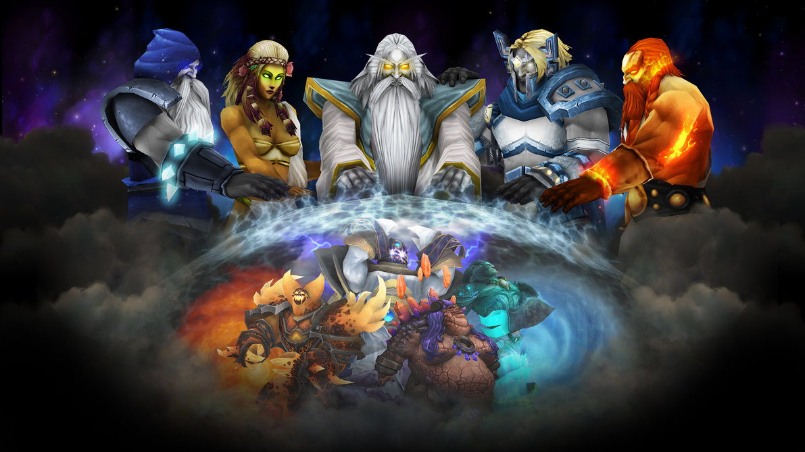

Capítulo I: Mythos
Acto 3: Los Dioses antiguos y la orden de Azeroth.

El hallazgo de Azeroth y los Señores Elementales
Desconociendo el empeño de Sargeras en destruir sus grandes hazañas, los titanes continuaron viajando de un planeta a otro, ordenando y sembrando de paz los sitios a los que iban. Durante el trayecto, hallaron un pequeño planeta cuyos habitantes llamaron Azeroth. Mientras los titanes examinaban el paisaje originario, encontraron a numerosos elementales hostiles. Estos elementales, que veneraban a una raza de seres de insondable maldad conocidos como los dioses antiguos, juraron que echarían a los titanes y protegerían su entorno de la presencia metálica de los invasores.
El Panteón, inquieto por las inclinaciones malignas de los dioses antiguos, declararon la guerra a los elementales y a sus maestros oscuros. Los ejércitos de los dioses antiguos actuaban bajo las órdenes de los tenientes elementales más poderosos: Ragnaros el Señor de Fuego, Therazane la Madre Pétrea, Al'Akir el Señor del Viento y Neptulon el Cazamareas. Sus caóticas fuerzas rugieron por todo el universo y se enfrentaron a los colosales titanes. Aunque los elementales tenían un poder más allá de toda comprensión, sus fuerzas conjuntas no podían detener a los poderosos titanes. Uno a uno, los señores elementales cayeron y sus fuerzas se dispersaron.
Los Dioses Antiguos

Los miembros del Panteón arrasaron los reductos de los dioses antiguos y encadenaron a los cinco dioses malignos en el subsuelo del planeta. Sin el poder de los dioses antiguos para mantener sus furiosos espíritus atados al mundo físico, los elementales fueron desterrados a un plano Abisal, donde lucharían entre sí por toda la eternidad. Tras la partida de los elementales, la naturaleza se apaciguó y en el mundo reinó una pacífica armonía. Al acabar con la amenaza, los titanes se pusieron manos a la obra.
Así, otorgaron poderes a numerosas razas para que les ayudaran a construir un nuevo mundo. Para ayudarles a cavar las insondables cavernas subterráneas, los titanes crearon a los terráneos, similares a los enanos, utilizando mágicas piedras vivientes. Para crear los mares y elevar la tierra por encima del nivel del mar, los titanes crearon a los inmensos, pero gentiles gigantes marinos. Durante varias eras, los titanes moldearon la tierra hasta crear un continente perfecto.
En el centro del continente, los titanes crearon un lago misterioso de energías incandescentes. El lago, llamado Pozo de la Eternidad, constituía la fuente de la vida de todos los seres que habitaban el planeta. Sus poderosas energías alimentaron los huesos de todo ser viviente y sembraron de vida aquel rico suelo. Con el tiempo, plantas, árboles, monstruos y criaturas de todas las clases empezaron a prosperar en el continente primigenio. En el crepúsculo del último día de sus obras de creación del mundo, los titanes dieron al continente el nombre de Kalimdor: tierra de la eterna luz estelar
.